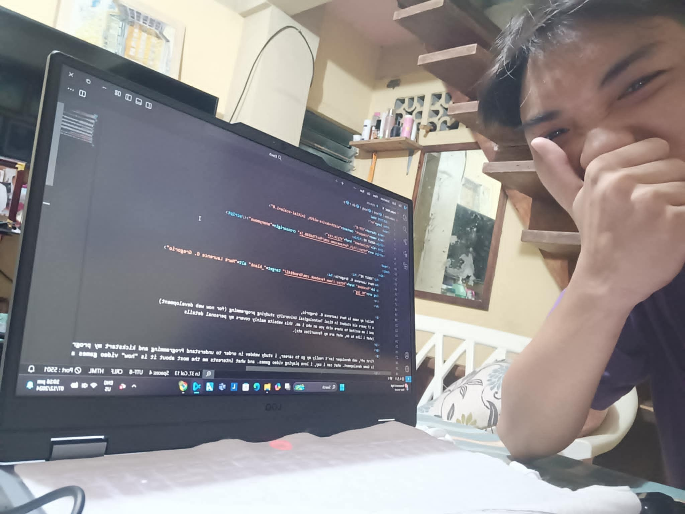
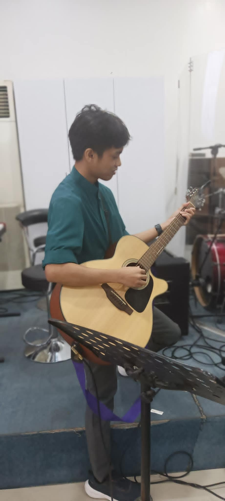

"ABOUT ME"
Mark Laurence G. Gregorio

Hello! my name is Mark Laurence G. Gregorio, a 17 years old student in Rizal Technological University studying programming (for now web development) and i am excited to share with you on who i am. this website mainly covers my personal details (what i like to do, what are my favourites etc).
first off, web developer isn't really my go to career, i study webdev in order to understand Programming and kickstart my programming journey, and to have a starter job in the near future hehe. my "Go to" career is Game development. what can i say, i love playing video games. and what interests me the most about it is "how" video games are made, what is happening behind the scenes. that is why i chose programming as a career choice.

now enough about my plans in the future, now to my hobbies! programming is one of my career choice and also my HOBBY, well future hobby. i haven't really gone far on web dev since i'm only starting out. playing the guitar is also one of my hobbies, the feeling of music in the palm of your hands is very pleasing. i play the guitar to just let it all out, go crazy, sing my heart out, specially in hard times. playing video games! as i mentioned i love playing video games, it's just a way to escape reality and spend quality time in a virtual world, where i can do whatever i want, and be whoever i want.
in summery, i am Mark Laurence G. Gregorio a passionate, curious, and creative individual on an exciting journey in programming and beyond. while web development is where i am starting, my true dream lies in game development, fueled by my love for video games and a fascination with how they are crafted. Besides my professional interest, i really love music and feel peace and enjoyment in playing the guitar, and for an entertaining indulgence in virtual worlds, have this glimples of who i am and what makes me happy. it's pleasure of sharing you who i am.
SOCIALS AND OTHERS
My facebookwhere i learned to code html and css (youtube)
where i learned to code html and css (w3schools)